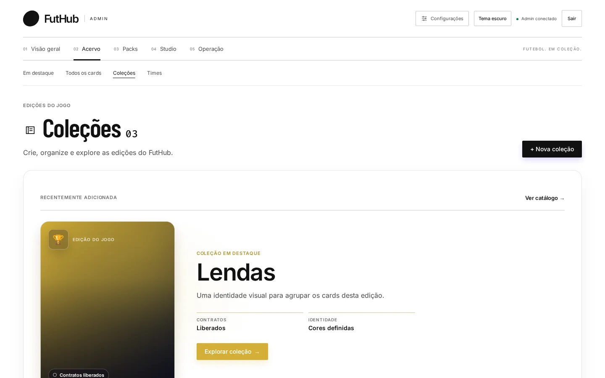
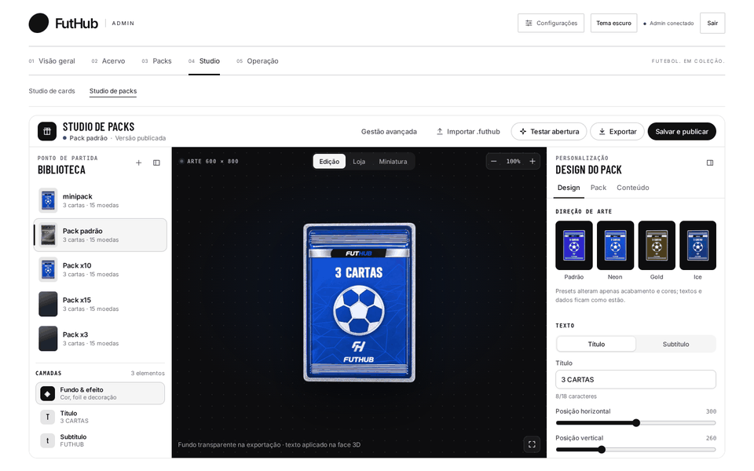

Início / Casos de uso / Nova edição
Caso 01
Edição nova até sexta à noite.
A janela de transferências fechou, o servidor quer cards novos e o fim de semana está chegando. É hora de transformar um elenco real numa edição jogável.
Você abre Times e clica em “Importar do EA FC”. Digita “Liverpool”, escolhe o clube e o elenco aparece com 28 jogadores e o overall de cada um. Deixa todos marcados, escolhe “Criar novo time: Liverpool” e a coleção de destino.

A edição precisa de identidade. Em Coleções, “+ Nova coleção” cria o grupo, e o editor sugere a arte. É essa coleção que vai limitar o que sai no pack.

No Banco de jogadores, você escolhe o primeiro card e clica em “Abrir no Studio”. O Smart Fill já preencheu os dados, então falta a foto: duas buscas no TheSportsDB e um clique. Você escolhe uma paleta, a superfície holográfica e passa pelas prévias Discord e Mobile. Com Ctrl K, segue para o próximo jogador.

Os cards estão prontos. No Studio de packs, o preset Gold dá cara de edição especial. Você muda o título, testa a abertura duas vezes e clica em “Salvar e publicar”.

Em Packs, você define 3 cartas por 15 moedas e um limite por jogador. Na elegibilidade, deixa só a nova coleção. Assim só sai card da edição nova.

Para o anúncio, você exporta a imagem social e o item EA FC do card principal e posta no canal de novidades.
Resultado: a edição foi ao ar numa tarde, sem abrir o banco nem o código, com o pack testado e cada card conferido nas prévias.